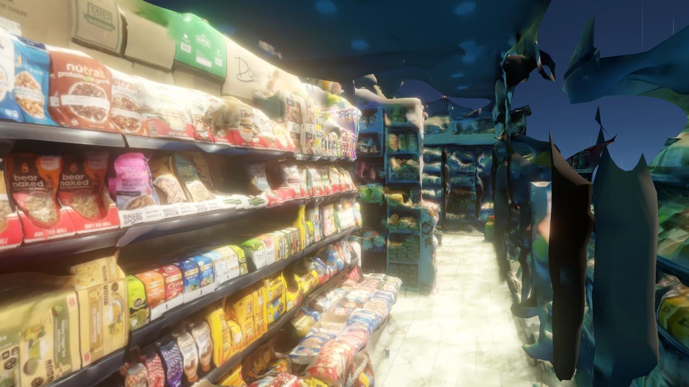

The Condition of the Ordinary
This project begins from a condition that is both ordinary and persistent: the everyday availability of food.
Food is encountered daily through routines of purchasing, cooking, storing, and consuming. It appears stable, predictable, and continuously accessible. Yet this apparent stability depends on systems that are rarely visible in everyday experience: distribution networks, storage infrastructures, transportation systems, and regulatory structures that operate in the background, sustaining the conditions under which food can be taken for granted.
The project uses food as a lens for tracing these hidden systems, as a way of surfacing what is embedded in everyday life but rarely examined. To follow food is to follow dependency itself.

// photogrammetry reconstruction — bodega interior, Red Hook
Environmental Feedback Loops
Early research in this project focused on the environmental dimensions of these systems. The concept of a foodprint offered a way to understand food as a set of measurable impacts, like carbon emissions, land use, energy consumption, and to situate it within a broader cycle linking production, transport, consumption, and waste to climate processes.
What this mapping reveals is not a linear sequence, but a feedback loop: food systems contribute to climate change, while climate change introduces instability into food production, distribution, and pricing. Cause and effect do not separate neatly. They fold back on one another, producing conditions that are difficult to resolve through any single intervention.
This understanding is shaped by environmental systems thinking, where feedback loops are understood as recursive processes rather than linear chains of cause and effect, and where effects become conditions for further action.
// hover nodes to explore — toggle loops to isolate
Spatializing Vulnerability
This line of inquiry extends into the city. I developed a Food Vulnerability Index to examine how food stability varies across neighborhoods in New York City, drawing together three dimensions: economic pressure, consumption intensity, and household storage capacity. The aim was to surface patterns of dependency that might otherwise remain invisible.
Reading Data Feminism (D'Ignazio and Klein) informed this process directly. Their argument that data reflects decisions, priorities, and omissions rather than neutral facts reshaped how I approached the index. The map is a constructed lens, one that illuminates certain relationships while inevitably casting others into shadow.
Understood this way, the index becomes a means of revealing where stability appears most contingent. In several areas of the city, food access depends not on proximity alone, but on the uninterrupted functioning of supply chains that most residents never encounter directly. Stability is borrowed, sustained by systems that remain outside individual control.
source: census data, USDA food access research atlas, NYC open data
methodology: composite weighted index per census tract
The Infrastructural Setting
These patterns of dependency become clearer when food systems are understood as infrastructure.
All Data Are Local reinforced that data and systems must be read in context, that the same supply chain produces different conditions depending on where one stands within it. Graham and Marvin's Splintering Urbanism extends this further, arguing that infrastructure does not simply distribute services evenly, but actively organizes uneven conditions of access and risk. Networks that appear seamless from the outside produce sharp distinctions on the inside.
Kate Crawford's Atlas of AI added another layer: that technological systems, often perceived as frictionless and automatic, depend on continuous material and labor processes that are systematically made invisible. This insight applies directly to food logistics. The cold storage facility, the delivery route, the overnight restocking of a shelf: these are not background functions but active conditions of everyday life. Food systems operate as infrastructures that produce both availability and exposure. They do not merely move goods — they distribute risk.
Mapping Patterns of Exposure
With this framework in place, the project examines how these conditions are distributed across the city through layered mapping.
Flood risk, land use, logistics infrastructure, transportation access, and food distribution networks are analyzed in relation to one another. No single layer tells the full story. What becomes significant is where they coincide: where environmental exposure overlaps with infrastructural dependency, where the absence of redundancy meets the presence of risk.
Vulnerability does not appear uniformly across the map. It concentrates, in ways that reflect accumulated decisions about where infrastructure is built, how land is used, and whose access is treated as essential. Fragility emerges not as an isolated event, but as a structural condition embedded in the organization of the city itself.
This mapping process became the analytical bridge toward a specific site.
Red Hook: A Site of Convergence
Red Hook surfaces through this process, as a place where these overlapping conditions become simultaneously legible.
Low elevation, sustained coastal flood exposure, limited transit connections, and a dense concentration of logistics and warehouse infrastructure converge within a relatively contained geography. These are not independent characteristics. They are part of a longer history of land use decisions that positioned industrial functions at the waterfront and insulated other neighborhoods from both the infrastructure and the risk.
At the same time, Red Hook supports residential life and local food networks whose everyday functioning depends on the systems visible throughout the neighborhood. This proximity between global logistics and bodega shelves, between loading docks and kitchen tables — is what makes the site generative. It allows systems that are typically encountered only through their effects to be directly observed in their spatial and material form.
Reading Radical Futurisms shifted how I understand Red Hook's relationship to flooding. Demos argues against treating climate events as sudden ruptures, locating them instead within slow, accumulating processes. Flooding in Red Hook is a condition that normal life is organized around.
// DATA PANEL — UNEVEN MOVEMENT Red Hook, Brooklyn
SITE COORDINATES
Red Hook, Brooklyn, New York
40.6749° N, 74.0094° W
FLOOD EXPOSURE
FEMA Zone AE — 100-year flood plain
Storm surge depth (Cat. 2): est. 4–6 ft above grade
Hurricane Sandy (2012): 6 ft inundation, ~80% neighborhood affected
TRANSIT
0 subway stations within neighborhood
Bus: B61 (waterfront corridor), B57 — limited frequency
Walk score: 88 · Transit score: 57
LOGISTICS INFRASTRUCTURE
Atlantic Basin, distribution warehouses along waterfront
Concentration of cold storage + last-mile facilities
Historically: Red Hook Container Terminal
OBSERVATION
Key distribution hub located in 100-year flood plain.
Proximity to water is both a logistical advantage
and a critical point of failure.
Investigative Aesthetics
Deciding how to represent these systems required its own line of inquiry. Fuller and Weizman's concept of investigative aesthetics offered the most useful framework: the idea that representation can function as a form of inquiry. Systems are not presented as complete, resolved wholes — they are reconstructed through fragments, traces, and spatial encounters. The act of representation becomes a method, not a conclusion.
This concept shaped every subsequent design decision in the project. The work proceeds through accumulation, gathering and organizing fragments until patterns become perceptible, while preserving the incompleteness that keeps interpretation open.
The Navigable Landscape
The project develops an interactive spatial environment in Unity, structured around the logic of infrastructure itself.
Photogrammetry captures fragments of the built environment in Red Hook: loading docks, delivery routes, storefronts, infrastructure at the waterfront. These fragments are deliberately partial, retaining texture and imperfection. The incompleteness is not a technical limitation but a design choice: a complete model would suggest a complete understanding, and that is precisely what the project resists. Forensic Architecture's practice, particularly its approach to assembling evidence across scales and registers, informed this logic directly, demonstrating how spatial reconstruction can operate as a form of knowledge production rather than mere documentation.
Navigation follows a node-based structure, moving users between fixed viewpoints with limited freedom upon arrival. Movement is sequential and constrained, mirroring the predefined pathways of infrastructure itself, where circulation is conditioned by decisions made elsewhere.
Throughout the environment, contextual panels open at each node, surfacing fragments of information: short narratives, observations, data points. These function less as explanations than as traces, requiring users to assemble meaning across movement. Informed by the visual investigative practices discussed in Reading Visual Investigations: Between Advocacy, Journalism, and Law, the use of photogrammetry and spatial reconstruction positions design as a method of inquiry rather than communication. The environment accumulates.


Limited Agency and Presence
Interaction within the environment is deliberately constrained.
Drawing from Flanagan's Critical Play and Bishop's Artificial Hells, the project resists the assumption that participation inherently produces agency. To be present within a system is not to control it. Users navigate, observe, and uncover, but they do not alter what they find. The conditions of the environment are fixed.
This creates a specific tension between presence and power: users are positioned within the system, made to move through it and encounter its logic, but cannot reshape it. This is intentional. It is an invitation to notice, to recognize that the systems shaping food access in Red Hook — and across the city — are not fixed by nature. They are the result of decisions made across planning, logistics, and policy, and could be otherwise.
The Politics of Urban Food Systems
Reading Ruha Benjamin and Kimberlé Crenshaw situates these conditions within broader structures of power.
Benjamin's work on race and technological systems reveals how infrastructure that appears neutral consistently reproduces existing inequalities. Crenshaw's framework of intersectionality insists that vulnerability cannot be understood through a single lens — it is produced through overlapping conditions of race, class, and geography. Together, these frameworks reframe what the mapping in this project is actually showing. The Food Vulnerability Index is a picture of where multiple systems of disadvantage converge.
Food systems are not neutral arrangements of logistics and supply. They are shaped by policy, investment, labor conditions, and historical patterns of access, producing profoundly uneven conditions across the city. Who has access to fresh food, who lives near distribution infrastructure, whose neighborhood absorbs the environmental costs of supply chains: these are not technical questions. They are political ones.
The fixed nodes, the constrained navigation, the inability to alter what is encountered — they reflect the experience of moving through a system whose terms have already been set, by decisions made elsewhere, for interests that are rarely made visible.
The Limits of Representation
Not all of the food system can be fully represented, and the project does not try to.
As Nora N. Khan argues, computational systems cannot capture subjective and situated experience — the texture of living within conditions that a diagram can only approximate. The project works with this limitation, treating incompleteness not as a failure but as an honest account of what representation can do.
Photogrammetry, in this sense, is an ongoing practice. Each capture is partial, each return to Red Hook producing something slightly different. The fragments accumulate without resolving. Visibility remains incomplete by design.
What the environment can do is create conditions for encounter, moments where the scale and dependency of these supply chains and distribution networks become perceptible, even if they cannot be fully grasped. To represent incompleteness is itself a form of knowledge: an acknowledgment that the system exceeds any single attempt to trace it.
Tracing Dependency
Tracing food becomes a method of tracing dependency.
What appears stable is revealed as contingent, reliant on systems that are continuous, largely invisible, and unevenly distributed. A gap in the supply chain, a flooded road, a disrupted logistics network: these are not aberrations but demonstrations of how tightly the ordinary depends on what it cannot see.
Red Hook is one neighborhood. But the conditions it makes visible are not local. Across New York City, food stability is unevenly held, shaped by decades of land use decisions, infrastructure investment, and policy priorities that have concentrated risk in some communities while insulating others. The vulnerability is not accidental. It is produced. And it follows the same lines as every other form of urban inequality: who lives where, who absorbs the cost of infrastructure, whose access to food has remained contingent, shaped by conditions outside their control.
Computational tools made this project possible. Data revealed patterns of vulnerability across the city. Photogrammetry reconstructed fragments of a built environment. The navigable environment in Unity positioned users inside the system, creating conditions for encounter.
These tools also mark the boundary of what this project can do. The fragility of food infrastructure is not a problem that can be resolved through representation alone. It requires attention across multiple scales: policy, investment, community knowledge, and urban planning, and a collective willingness to treat food access as a public responsibility.
Food infrastructure is public infrastructure. The conditions that make it fragile are structural, not incidental, unevenly distributed across a city where the cost of vulnerability has never been shared equally. Making that visible is not enough. But it is where any serious rethinking has to begin.
To trace the food is to trace the fragility. And to trace the fragility is to understand not just a neighborhood, but a city, and the decisions, visible and invisible, that continue to shape who it is built for.